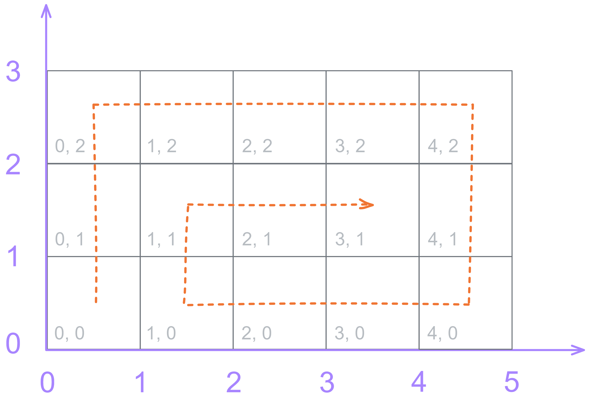
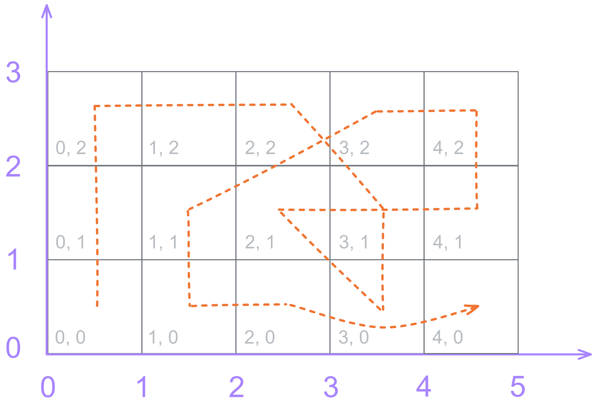
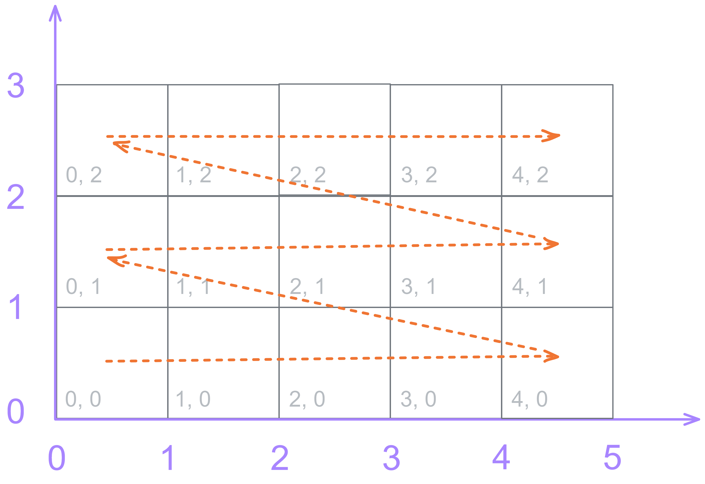
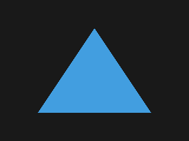

Triangle: Rasterization
This article is part of Graphics From Scratch, a series of articles on computer graphics. Start from the beginning if you want to know what's going on.
In the previous article, we saw how we can determine if a point is inside a triangle, and we're now ready to render our triangle. The process of selecting pixels that fall inside a triangle is what we call rasterization, which is what every game and graphics program uses to render images. Said pixels are sometimes called fragments, and you'll see these terms being used interchangeably.
We'll add this nested loop at the bottom of the code section:
for y in range(HEIGHT):
for x in range(WIDTH):
# pixel center point
p = Vec2(...)
# see if p falls inside the triangle
bary: Vec3 = cart_to_bary(p, v0, v1, v2)
is_inside: bool = not bary_is_outside(bary)
# pick colors for the background and the triangle
COL_BG = Color(.1, .1, .1)
COL_TRI = Color(.26, .62, .88)
# determine the final color
col: Color = COL_TRI if is_inside else COL_BG
# update the buffer
idx = ...
buf[idx] = colPixel Center
Next, we need to fill the omitted parts in the code (...).
Starting from the top, we need to calculate the current pixel's center
coordinates. As discussed previously, the center coordinates are offset by 0.5
units from the integer coordinates of the pixel:
for y in range(HEIGHT):
for x in range(WIDTH):
# pixel center point
p = Vec2(x + .5, y + .5)
... Indices and Ordering
Now, buf is a one-dimensional array, but we're working with a 2D
grid of pixels, so how do we convert our integer X and Y coordinates to a 1D
coordinate?
We could have used a 2D array from the start, but learning how things
are laid out in memory (RAM or VRAM) helps us better understand the decisions
we make. After all, memory addresses are 1D indices. Consider the following
5x3 grid.
How would you personally order the cells in a 1D sequence? Would you do it like this?
Or, this?
Yeah, I don't think so. We need to pick an order we can easily derive a formula for. A formula that can turn our X and Y to a 1D index, and vice versa. Here's one such ordering:
Let's make a table for X and Y and the index to find the relation between them. Keep in mind the width and height which are 5 and 3 respectively.
| Index | X | Y |
|---|---|---|
| 0 | 0 | 0 |
| 1 | 1 | 0 |
| 2 | 2 | 0 |
| 3 | 3 | 0 |
| 4 | 4 | 0 |
| 5 | 0 | 1 |
| 6 | 1 | 1 |
| 7 | 2 | 1 |
| 8 | 3 | 1 |
| 9 | 4 | 1 |
| 10 | 0 | 2 |
| 11 | 1 | 2 |
| 12 | 2 | 2 |
| 13 | 3 | 2 |
| 14 | 4 | 2 |
Take a look at X as the index goes up: 0, 1, 2, 3, 4, 0, 1, 2, 3, 4, ...
It's a repeating pattern. It looks a lot like taking the remainder in an
integer division. In fact, it is the remainder of an integer
division: it's index % 5. More generally, it's
index % WIDTH. So, now you know how to calculate X based on the
1D index and the width of the image.
Let's do the same with Y. The values from top to bottom are five 0s, five 1s,
and five 2s. It seems like Y is being divided by some other integer, because
it's increasing in a slow rate in a linear fashion. Turns out, Y is equal to
index // 5, which, in general, is index // WIDTH.
The // symbol is for integer division where the result is
floored.
We now know how to convert a 1D index to X and Y integer coordinates, but how
do we do the inverse? How do we go from X and Y to the 1D index? One thing you
can notice is that every time X goes up by 1, or resets back to 0 after
reaching WIDTH, the index also goes up by one. Another thing is
that the indices of the cells in the first row range from 0 to 4, while the
second row has indices from 5 to 9, and the third row goes from 10 to 14,
which is a total of 15 indices, because we have 15 cells. The index is almost
equal to X, except it increases by 5, or WIDTH, every time we go
to the next row. The index is equal to x + (y * WIDTH).
Let's create functions for these conversions. We'll add them at the end of the functions section.
... (other functions)
def idx_to_icoord(idx: int, width: int) -> tuple[int, int]:
return (idx % width, idx // width)
def icoord_to_idx(x: int, y: int, width: int) -> int:
return x + (y * width)We can now update the code that modifies the buffer.
for y in range(HEIGHT):
for x in range(WIDTH):
...
# update the buffer
idx = icoord_to_idx(x, y, WIDTH)
buf[idx] = col
Because of the way processors work, jumping around to random places in memory
is much slower than iterating it linearly, one block after another. It's
faster to access the elements of an array ordered by the index than to access
them in a random and/or unpredictable pattern. This explains why the outer
for loop goes through the height of the image while the inner loop
iterates through the width of the image. This way, idx is
incremented by 1 every time. If it were the other way around, it would be
incremented by WIDTH in every iteration, which would slow us down
by a lot.
Exporting
Since we're not using a graphics API, or a library that uses a graphics API,
we can't really display our image on the screen. It would suck if we couldn't
see what we're rendering. That's where the fun is, after all. To work around
this, we can export our image to a PNG file and hand off the task of
displaying the image to an image viewer program, like the one that comes
default with your operating system. There are several Python libraries for
working with image files, but the one we'll use is
Pillow. You can
find the installation instructions
here.
We'll start by importing the Image class from the library. We'll
put all import statements at the top of the script.
from PIL import ImageBack at the very bottom, we'll add this piece of code to export our image to a PNG file.
# export to PNG
img: Image = Image.new('RGB', (WIDTH, HEIGHT))
img.putdata(buf_rgb8)
img.save(PNG_SAVE_PATH, 'PNG')Let's add a constant for the PNG save path in the constants section. You can use any other path you want.
PNG_SAVE_PATH: str = './cpu-triangle.png'
What the Image.putdata() function expects from us is an array of
tuple[int, int, int], but buf is an array of
Color objects, so we'll make a new buffer with the expected
format and copy the data from buf.
# RGB8 buffer
buf_rgb8: list[tuple[int, int, int]] = []
for i in range(N_PIXELS):
col: Color = buf[i]
buf_rgb8.append(...)
# export to PNG
...
So, how do we convert a Color to a tuple of integers? We could
just convert the float values from Color to
integers, but that wouldn't really work, because values like 0.5 would be
truncated down to 0. What Pillow expects is an integer in the [0, 255] range.
Said range comes from the fact that most everyday image files usually use
8-bit integers to store their values, and an 8-bit integer has 2 to the power
of 8 possible values: 256, which is exactly the number of integers we have
from 0 to 255. This is also why we named the new buffer buf_rgb8.
All we need to do now is to multiply our float values by 255 and convert them
to integers.
# RGB8 buffer
buf_rgb8: list[tuple[int, int, int]] = []
for i in range(N_PIXELS):
col: Color = buf[i]
buf_rgb8.append((
int(col.r * 255),
int(col.g * 255),
int(col.b * 255)
))Moment of Truth
Let's open the exported file and see what it looks like.
Yay! We got a triangle... except it's kinda upside down. This is a typical mistake you'll run into when moving image data between different libraries and devices. In some libraries, including Pillow, the Y coordinate starts from the top and goes down, which is opposite to what we have. Thankfully, there's a simple fix for this: we flip Y when calculating the 1D index. Back in the nested loops where we render our triangle, we'll modify the code that writes to the buffer.
for y in range(HEIGHT):
for x in range(WIDTH):
...
# update the buffer
idx = icoord_to_idx(x, HEIGHT - y - 1, WIDTH)
buf[idx] = colIf we run the script again, we get this image:
Congrats! You now know how to manually render a triangle from scratch without ever using a graphics library. This seemingly insignificant piece of knowledge is, in reality, highly valuable, and will greatly help us when we want to work with an actual graphics API.
In the next article, we'll modify our code to be able to render multiple triangles with different colors.